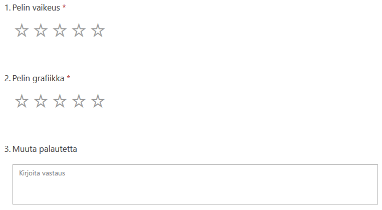
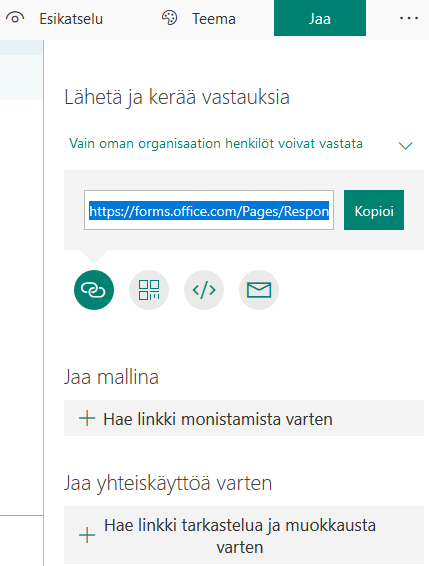

Projektityö
Yleistä
Tehtävänanto projektille kuvaa yleisellä tasolla mitä osasuorituksia tekemisen aikana tulisi saada tehtyä. Aihe on työlle vapaa, voit itse miettiä sinulle sopivan tuoteidean.
Osatehtävät
GitHub
- Lisää unity-kurssille oma projektiseinä (Project). Käytä Board-mallia ja lisää sarakkeet To do, In progress sekä Done.
- Mieti To do -sarakkeeseen mitä tehtäviä projektisi sisältäisi. On parempi jakaa työ mielummin liian pieniin kuin liian suuriin osatehtäviin.
- Lisää tehtäviksi myös Loppuraportti, Esittely ja Testauslomake.
Tuntiseuranta
- Tuntiseuranta voi olla GitHub-seinällä oma sarake (Daily) jossa merkintä päivän työlle. Kerro päiväys, tunnit ja mitä tehty.
- Vaihtoehtoisesti voit tehdä MS Excel-taulukon johon kirjataan toteutuneet tunnit. Esimerkki tuntien suunnittelusta (aikataulu) ja seurannasta: Excel-taulukko projekti_tunnit.xlsx. Lopputulosta voi hyödyntää loppuraportissa kun mietitään mihin aika on kulunut.
Loppuraportti
- 1. Yleistä
- Miten tunsit onnistuneesi, mitä saavutit projektin aikana?
- Ajankäyttö: miten ajankäyttösi jakautui projektityössä? Voit käyttää kaaviota jos osaat sellaisen tehdä tuntiseurannastasi.
- 2. Pelin käyttöliittymä
- Ota kuvaruutukaappaukset tärkeimmistä pelisi näkymistä.
- Kerro sanallisesti mitä pelisi objektit ovat (mitä kuvassa näkyy).
- Lisää caption-otsikot kuville.
- 3. Luokkakaavio
- Visio: Staattinen UML rakenne
- Lisää luokat (Skriptit), luokille attribuutit (muuttujat) ja metodit (aliohjelmat).
- 4.Testauksen tulokset
- Mitä mieltä testaajat olivat pelistäsi, ota mukaan mielellään kaavioita kyselystäsi?
- Kerro sanallisesti miten testaus meni oman pelisi osalta.
- Ota tuloksistasi tärkeimmät kaaviot mukaan työhösi.
- 5. Jatkokehitys
- Jäikö työhön jatkokehitykseen asioita? Miten työtä voisi täydentää myöhemmin?
- Mitä asioita olisit halunnut ehkä tehdä toisin (aika, osaaminen syynä)
Pelitestaus
Testauksen palautteen kerääminen lomakkeen avulla
- tehdään Microsoft Forms (tai Google Forms) lomake
- lomake lähettää tiedot sinun Office365-Excel-lomakkeeseesi
- tarkoitus käyttää 9lk tutustujien kanssa.
Microsoft Forms
- suunnittele uusi kyselylomake
- ei tarvita montaa kysymystä, tarkoitus olla sellainen jolla saat nopeasti palautetta pelitestauksen jälkeen
- voit käyttää esim tähtiä ja avointa palautetta kysymyksissä

Kun lomkkeesi on valmis
- Muuta asetuksista käyttöön valinta "Käyttäjät, joilla on linkki, voivat vastata"

- Jaa lomake

- kopioi linkki Eerikin jaettuun MS Excel-taulukkoon sarakkeeseen "Testauslomake"